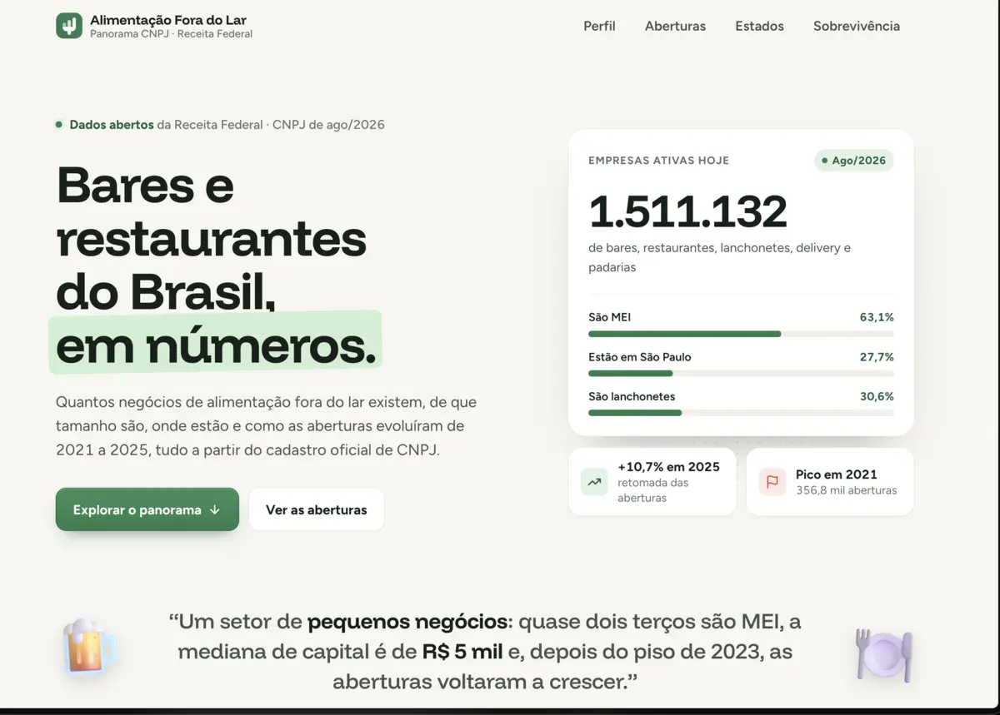
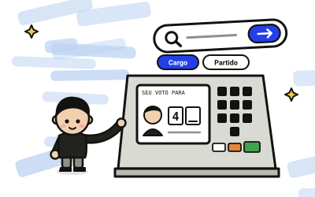

CNPJ Alimentação
Analisei 72,8 milhões de registros de CNPJ da Receita Federal e montei um dashboard sobre bares e restaurantes.
- Python
- DuckDB
- Parquet
- FastAPI
- React

02 / Projetos
Analisei 72,8 milhões de registros de CNPJ da Receita Federal e montei um dashboard sobre bares e restaurantes.

Sistema em produção que organiza a mentoria de calouros da PUC Minas. Gera certificados e relatórios sozinho.
Simulador que mostra se um carro elétrico por assinatura cabe na sua rotina e compara o custo com a gasolina.

Receita médica digital para o SUS, feita em equipe de quatro. Fiz a landing page e as telas do médico.

Busca de candidatos de Minas Gerais por nome, número, cargo ou partido.
